Dimple
Postdoctoral Fellow
University of Birmingham, United Kingdom
About Me
I am a Postdoctoral Fellow at the University of Birmingham, specializing in high-energy astrophysics, with a focus on Gamma-Ray Bursts (GRBs). My research focuses on understanding these powerful cosmic phenomena and their connection to the early universe and the formation of heavy elements. I grew up in the rural village of Kaul, near Kurukshetra, where I completed my schooling and undergraduate studies. I then pursued my PhD at the Aryabhatta Research Institute of Observational Sciences (ARIES) in Nainital, a place that also allowed me to indulge in my love for nature. Long treks in the lower Himalayan range have been a source of inspiration, teaching me valuable lessons about staying calm and focused when faced with challenges. When I'm not immersed in my research, you'll likely find me playing badminton, connecting with people from different cultures, trekking, and most probably dancing, which is a stress reliever for me and helps me unwind and stay energized. I’m always eager to learn new things and connect with others. Feel free to reach out if you'd like to collaborate, share ideas, or discuss anything related to my work or beyond.
 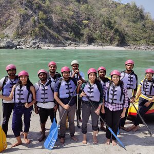
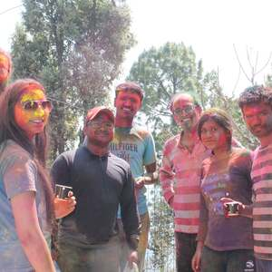
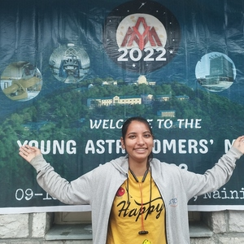
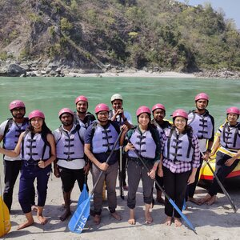
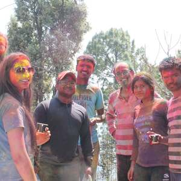
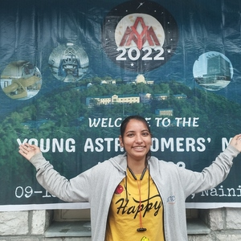
 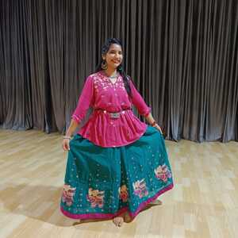
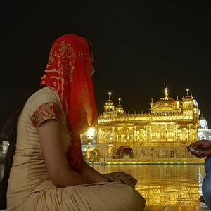
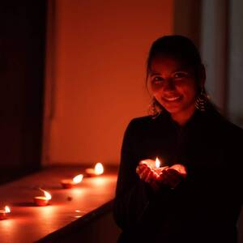
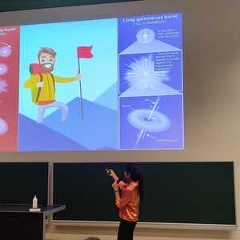
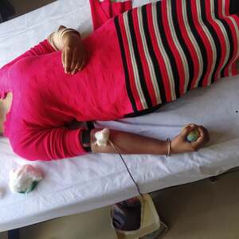
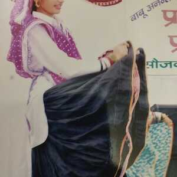
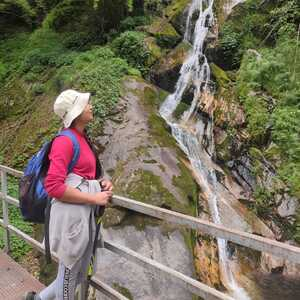
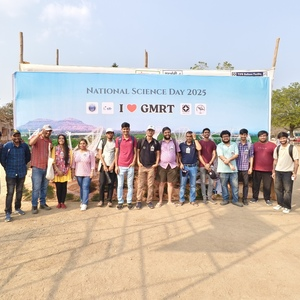
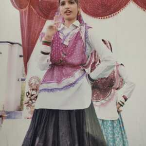
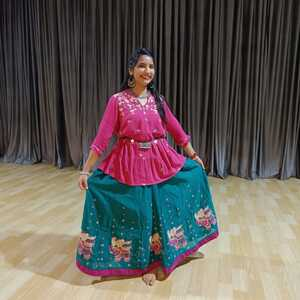
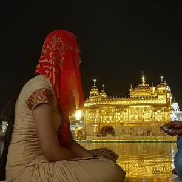
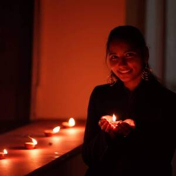
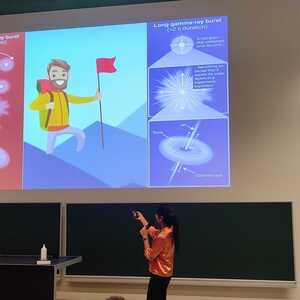
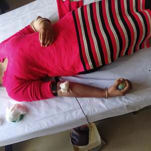
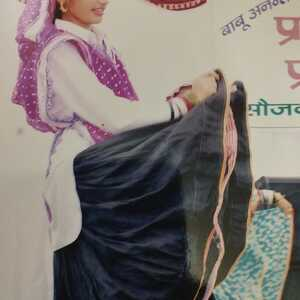
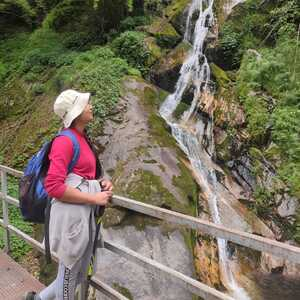
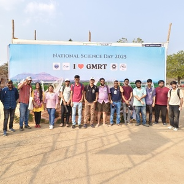
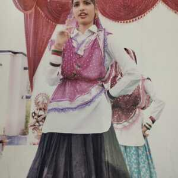
 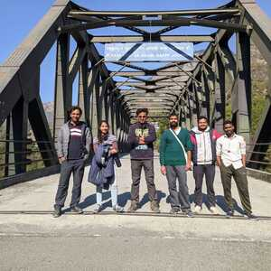
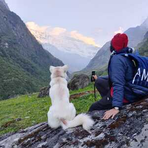
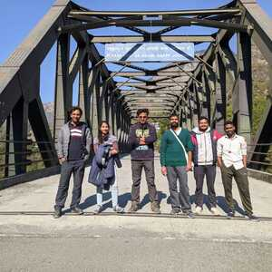
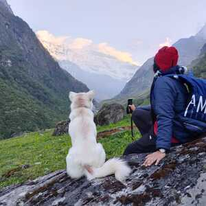